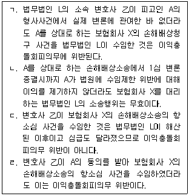
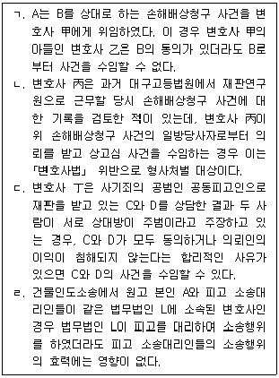
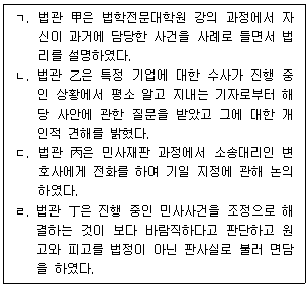
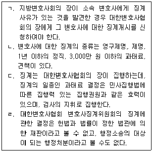
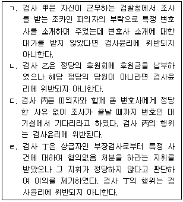
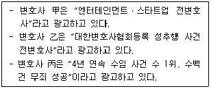
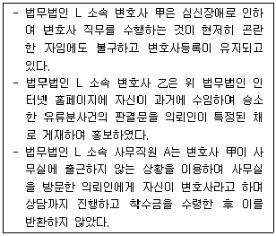

1과목: 임의 구분
1. 변호사와 의뢰인의 관계에 관한 설명 중 옳지 않은 것은?
2. 변호사의 비밀유지의무에 관한 설명 중 옳지 않은 것은?
3. 변호사윤리에 관한 설명 중 옳지 않은 것은? (다툼이 있는 경우 판례에 의함)
4. 변호사의 업무에 관한 설명 중 옳은 것은?
5. 공직퇴임변호사의 수임제한에 관한 설명 중 옳지 않은 것은?
6. 변호인선임서에 관한 설명 중 옳지 않은 것은? (다툼이 있는 경우 판례에 의함)
7. 법률사무소의 사무직원에 관한 설명 중 옳지 않은 것은?
8. 변호사 甲은 강도 혐의로 구속된 피고인 A의 국선변호인으로 선정되어 접견하였는데, A는 甲에게 자신이 범행한 것은 맞지만 꼭 석방되어야 할 사정이 있으니 사선으로 전환하여 무죄변론을 해 달라는 요청을 하였다. A는 수사기관에서부터 일관되게 범행을 부인하고 있었고, A의 유죄를 입증할 증거도 충분하지 않다. 이에 관한 설명 중 옳은 것은? (다툼이 있는 경우 판례에 의함)
9. 변호사 아닌 자가 유상으로 법률사무를 취급하는 행위에 관한 설명 중 옳지 않은 것은? (다툼이 있는 경우 판례에 의함)
10. 변호사와 의뢰인의 관계에 관한 설명 중 옳지 않은 것은? (다툼이 있는 경우 판례에 의함)
11. 법무법인 L은 업무상 재해로 숨진 근로자의 유족을 대리해 회사를 상대로 하는 손해배상청구소송을 수임하였고 변호사 甲을 담당변호사로 지정하였다. 그런데 변호사 甲은 소송을 수행하면서 재판기일에 세 차례 출석하지 않아 쌍방불출석으로 소가 취하 간주되었다. 이에 관한 설명 중 옳지 않은 것은? (다툼이 있는 경우 판례에 의함)
12. ｢변호사법｣상 형사처벌의 대상이 아닌 것은?
13. 변호사의 비밀유지의무에 관한 설명 중 옳지 않은 것은?
14. 사내변호사에 관한 설명 중 옳지 않은 것은?
15. 변호사 甲은 법무법인 L에서 2년간 소속 변호사로 근무하다 공정거래위원회 공무원으로 2020.3.15.부터 2023.3.14.까지 근무한 이후 퇴직하여 2023.4.1. 개인법률사무소를 개설하였다. 건설회사 X의 임원 A는 대형국책사업의 공사입찰업무를 담당하였는데, 공정거래위원회는 건설회사 X가 경쟁건설회사와 입찰담합을 했다는 이유로 직권조사를 개시하였다. 임원 A는 2023.6.7. 현재 법률사무소에 찾아와 위 사건에 대응하고자 변호사 甲을 건설회사 X의 법률대리인으로 선임하고 싶다고 하였다. 이에 관한 설명 중 옳지 않은 것은?
16. 법무법인 L은 피고인 A의 보험사기 형사사건을 수임하여 소속 변호사 甲, 乙을 담당변호사로 지정하고 변호사 甲이 A를 변호하였다. 한편 해당 보험사기 피해자인 보험회사 X는 A를 상대로 하는 손해배상청구 사건을 법무법인 L에 위임하여 소속 변호사 乙이 그 1심 사건을 수행하였다. 이후 법무법인 L이 해산되자 변호사 乙은 개인법률사무소를 개업하고 보험회사 X의 위 손해배상소송의 항소심 사건을 수임하여 수행하였다. 이 경우 변호사의 이익충돌회피의무에 관한 설명 중 옳은 것을 모두 고른 것은? (다툼이 있는 경우 판례에 의함)

17. 변호사의 이익충돌회피의무에 관한 설명 중 옳지 않은 것은? (다툼이 있는 경우 판례에 의함)
18. 변호사의 공익활동의무에 관한 설명 중 옳지 않은 것은?
19. 변호사의 비밀유지의무에 관한 설명 중 옳지 않은 것은?
20. 변호사의 이익충돌회피의무에 관한 설명 중 옳지 않은 것을 모두 고른 것은? (다툼이 있는 경우 판례에 의함)

2과목: 임의 구분
21. 변호사 甲은 수년간 건설회사 X의 공사대금청구 사건을 처리하였다. 최근 회사 X의 회사 Y에 대한 공사대금청구 사건을 수행하여 승소판결을 받았지만 회사 X의 재정악화로 해당 사건의 성공보수금을 지급받지 못하고 있다. 현재 회사 X는 해당 판결의 확정에 따라 회사 Y에 대한 공사대금 채권을 가지고 있고, 직접 그 사건에 관한 소송비용확정신청을 하여 법원의 결정까지 받은 상태이다. 이에 관한 설명 중 옳지 않은 것은? (다툼이 있는 경우 판례에 의함)
22. 법관윤리상 허용되는 것을 모두 고른 것은?

23. ｢외국법자문사법｣에 관한 설명 중 옳지 않은 것은?
24. 변호사와 의뢰인의 관계에 관한 설명 중 옳지 않은 것은? (다툼이 있는 경우 판례에 의함)
25. 변호사의 직무범위와 관련한 설명 중 옳지 않은 것은? (다툼이 있는 경우 판례에 의함)
26. 甲은 선고유예 판결의 확정으로 변호사등록이 취소되었다가 선고유예기간이 경과한 후 대한변호사협회에 변호사등록을 신청하였다. 甲이 대한변호사협회 및 협회장 乙을 상대로 변호사등록 거부사유가 없음에도 위법하게 등록심사위원회에 회부되어 변호사등록이 2개월간 지연되었음을 이유로 손해배상을 구하고 있다. 이에 관한 설명 중 옳지 않은 것은? (다툼이 있는 경우 판례에 의함)
27. 변호사의 징계에 관한 설명 중 옳은 것을 모두 고른 것은? (다툼이 있는 경우 판례에 의함)

28. 변호사연수에 관한 설명 중 옳지 않은 것은?
29. 검사윤리에 관한 설명 중 옳은 것을 모두 고른 것은?

30. 검찰 인사 이동으로 변호사 甲의 개업지를 관할하는 지방검찰청에 변호사 甲과 검사임관 동기인 A가 형사1부장검사로 부임해 왔다. 변호사 甲은 사무장 B를 시켜서 '변호사 甲이 형사1부장검사 A와 각별한 사이이니 형사1부에 배당된 사건을 잘 해결하기 위해서는 변호사 甲을 선임해야 한다'고 홍보하도록 하였다. 평소 변호사 甲과 친하게 지내던 변호사 乙은 지방검찰청 형사1부에 배당된 피의사건을 상담하기 위하여 찾아온 C에게 변호사 甲을 소개하여 주었고, 변호사 甲은 C의 사건을 수임하였다. 이에 관한 설명 중 옳은 것은? (다툼이 있는 경우 판례에 의함)
31. 대한변호사협회가 변호사등록을 거부하여야 하는 대상이 아닌 것은?
32. 다음 변호사 광고에 관한 설명 중 옳지 않은 것은?

33. 원고 A가 피고 B, C, D를 상대로 제기한 공동불법행위를 원인으로 한 손해배상청구 사건에서, 변호사 甲은 피고 B와 보수금을 1,600만 원으로 정한 위임계약서를 작성하였다. 이후 피고 B는 변호사 甲의 소송위임장 용지에 피고 C, D로부터 날인을 받은 다음 이를 변호사 甲에게 교부하였다. 변호사 甲은 위 소송위임장을 해당 사건 재판부에 제출하고 피고 B, C, D를 대리하여 소송사건을 수행한 결과 전부승소 판결을 선고받았다. 이에 관한 설명 중 옳지 않은 것은? (다툼이 있는 경우 판례에 의함)
34. 아래 내용과 관련하여, 다음 설명 중 옳지 않은 것은? (다툼이 있는 경우 판례에 의함)

35. 변호사의 광고로 허용되는 경우가 아닌 것은?
36. 변호사의 보수에 관한 설명 중 옳지 않은 것은? (다툼이 있는 경우 판례에 의함)
37. 변호사와 의뢰인의 관계에 관한 설명 중 옳지 않은 것은? (다툼이 있는 경우 판례에 의함)
38. 변호사의 보수에 관한 설명 중 옳지 않은 것은? (다툼이 있는 경우 판례에 의함)
39. 법관 甲은 인터넷 게시판에 최근 시행된 국회의원 보궐선거에 대한 정치적인 의견과 특정 후보자를 비방하는 내용의 글을 수차례 게시한 것을 비롯하여 여러 건의 범죄 혐의로 형사소추 되었다. 이에 관한 설명 중 옳지 않은 것은?
40. 변호사와 의뢰인의 관계에 관한 설명 중 옳지 않은 것은?